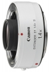

器材库 > 增距镜 > EXTENDER EF 1.4x III

详细规格
镜头类型
增距镜
发布日期
2010-08-26
厂家推荐价格
57,750.00 （日元）
增距倍率
1.4倍
镜头结构
7片/3组
颜色
白色
尺寸
72.0×27.2mm
重量
225g
镜头卡口
Canon EF
cybertron2017-10-22 04:164.67 分
操作性 5.00耐用性 5.00性价比 4.00解像力 4.50色彩还原 4.50机械结构 5.00
相机2012-12-29 01:554.67 分
操作性 5.00耐用性 5.00性价比 3.50解像力 5.00色彩还原 4.50机械结构 5.00
产品图 / 样片
佳能 EXTENDER EF 1.4x III
评测 / 相关文章
- 详细内容 （存档）
- ［资讯］佳能EF1.4X III&EF 2X III开售 （存档）
- ［资讯］佳能推迟三款镜头发售日期 （存档）
- ［资讯］佳能EF镜头附件 （存档）
相关文章
- ［资讯］佳能EF1.4X III&EF 2X III开售 （存档）
- ［资讯］佳能推迟三款镜头发售日期 （存档）
- ［资讯］佳能推出两款新一代增距镜 （存档）
- ［资讯］佳能EF镜头附件 （存档）